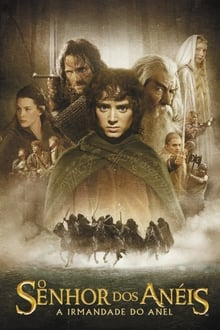

Versailles
“Versailles” explora a mente do Absolutista Francês Luís XIV, o “Rei Sol”, que se impôs como monarca ainda muito jovem. A trama pretende abordar como o trauma que ele sofreu durante uma guerra civil francesa, que aconteceu quando ele tinha 10 anos, moldou seu psicológico e muitas das decisões que ele tomou como líder do país.


